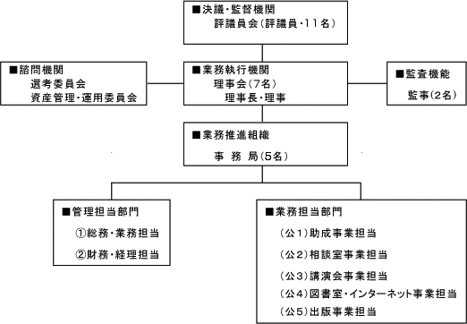

| 設 立 | 昭和63（1988）年7月28日（設立許可：厚生省収健医第167号） |
| 公益認定 | 平成25年3月22日（認定書：府益担第1351号） |
| 移行登記 | 平成25年4月1日 |
| 基本財産 | 18億8千4百万円（令和7年3月末／2025.3.31） |
| 国と関係がある公益法人への該当性 | 「国と特に密接な関係がある」公益法人への該当性について（公表）当法人は、平成20年12月31日に施行された改正国家公務員法等の規定に関し、国家公務員であった者が法人の役員として再就職する場合に事前に政府に届出を行う事が必要な「国と特に密接な関係がある法人」に該当しませんので、その旨公表致します。 |
運営組織

| 評議員（11名） | ||
|---|---|---|
| 氏 名 | 勤務形態 | 所属等 |
| 我妻（あづま）則明 | 非常勤 | 湘南台心理教育相談室 代表 |
| 石山 一舟 | 非常勤 | ブリティッシュコロンビア大学 名誉准教授（カナダ） |
| 伊東 眞行 | 非常勤 | まほろばカウンセリングオフィス 代表 |
| 黒木 俊秀 | 非常勤 | 中村学園大学大学院教育学研究科 教授 |
| 小林 美穂子 | 非常勤 | カウンセリングルーム Heartful-mind 代表 |
| 所司原（しょしはら）一郎 | 非常勤 | 所司原一郎会計事務所 所長 |
| 白川 治 | 非常勤 | 湊川病院精神科 医師 |
| 田邉 千栄里 | 非常勤 | 森田療法オンラインカウンセリング 代表 |
| 南條 幸弘 | 非常勤 | 城北公園クリニック 医師 |
| 西村 義智 | 非常勤 | 西村義智法律事務所 所長 |
| 森田 正哉 | 非常勤 | 三島森田病院 病院長 |
| 理 事（7名） | ||
|---|---|---|
| 氏 名 | 勤務形態 | 所属等 |
| 岡本 信夫 | 常勤 | メンタルヘルス岡本記念財団 理事長 |
| 岡本 清秋 | 非常勤 | NPO法人生活の発見会 相談役 |
| 北西 憲二 | 非常勤 | 北西クリニック 院長 |
| 甲田 勝康 | 非常勤 | 関西医科大学医学部衛生・公衆衛生学講座 主任教授 |
| 中村 敬 | 非常勤 | RICメンタルクリニックあざみ野院・三軒茶屋院 医師 |
| 森 則夫 | 非常勤 | 福田西病院 理事長 |
| 山崎 和子 | 常勤 | メンタルヘルス岡本記念財団 事務局長 |
| 監 事（2名） | ||
|---|---|---|
| 氏 名 | 勤務形態 | 所属等 |
| 池口 毅 | 非常勤 | 大阪西総合法律事務所弁護士 |
| 加藤 純一 | 非常勤 | 橋本・加藤事務所公認会計士・税理士 |
| 選考委員（7名） | ||
|---|---|---|
| 氏 名 | 勤務形態 | 所属等 |
| 鹿島 晴雄 | 非常勤 | 慶応義塾大学医学部 客員教授 |
| 笠井 清登 | 非常勤 | 東京大学大学院医学系研究科 脳神経医学専攻臨床神経精神医学講座 教授 |
| 河合 啓介 | 非常勤 | 国立健康危機管理研究機構(JIHS) 国立国府台医療センター 副院長 |
| 菊地 俊暁 | 非常勤 | 慶應義塾大学医学部 精神・神経科学教室 准教授 |
| 久保田 幹子 | 非常勤 | 法政大学現代福祉学部 臨床心理学科 教授 |
| 越川 房子 | 非常勤 | 早稲田大学文学学術院文学部 心理学教室 教授 |
| 中里 道子 | 非常勤 | 国際医療福祉大学成田病院 精神科 代表教授・診療部長兼任 |